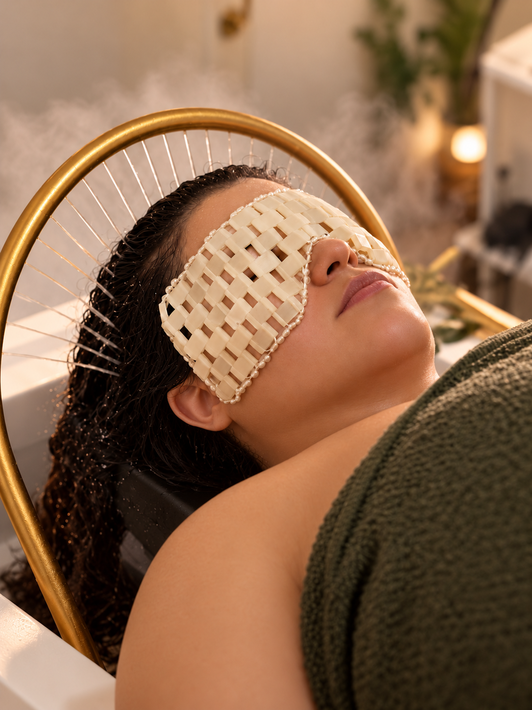
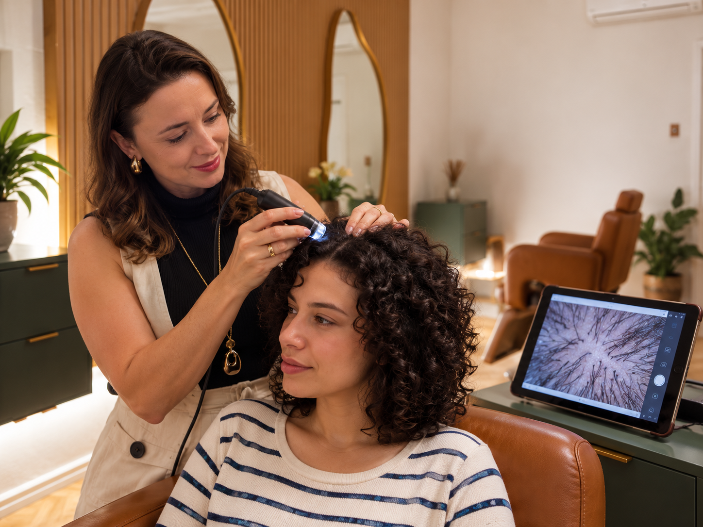
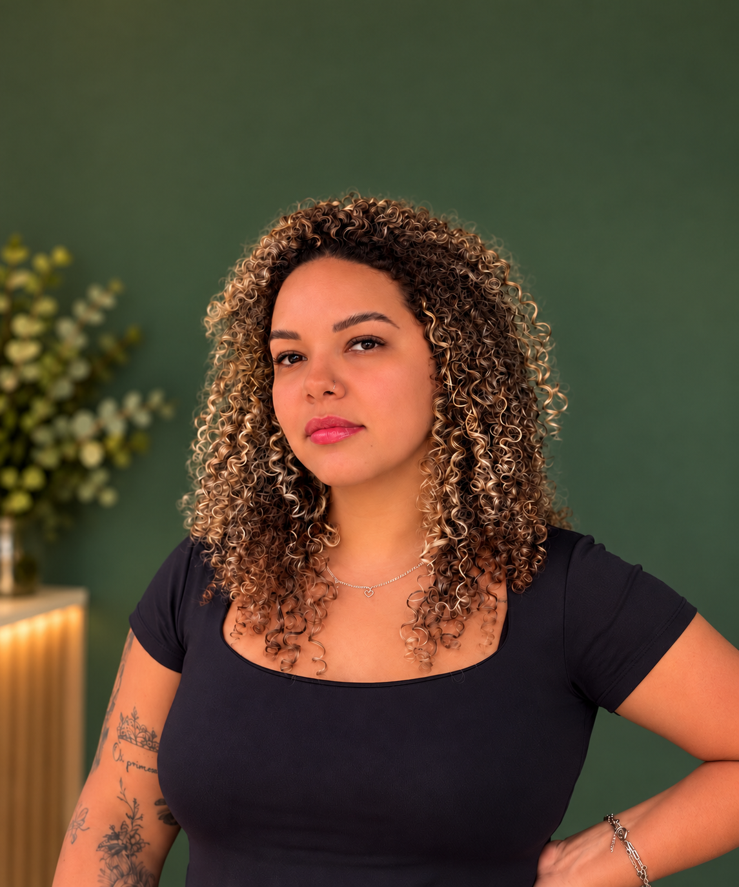
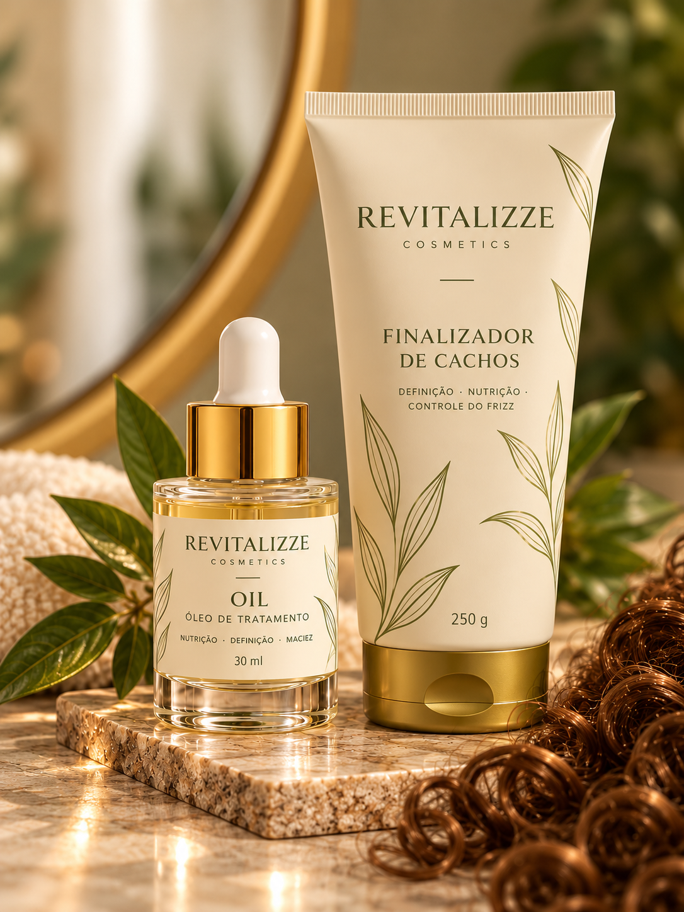

Head Spa Essencial
Higienização dos cabelos, tratamento dos fios, vapor de ozônio, cascata de água, massagens craniana e facial, hidratação facial, aromaterapia e finalização.
HEAD SPA & HAIR THERAPY · CANOAS, RS
Head Spa, terapia capilar e atendimento especializado para cabelos ondulados, cacheados e crespos.
NOSSA ESSÊNCIA
A Revitalizze Hair Therapy é um espaço dedicado à saúde capilar, à beleza natural e ao bem-estar.
Nossa essência está em compreender que cada pessoa é única e merece um cuidado que respeite suas características, necessidades e individualidade.
Unimos conhecimento, técnicas especializadas e um olhar acolhedor para proporcionar experiências que valorizam não apenas a beleza, mas também o equilíbrio e o autocuidado.
Acreditamos que cuidar de si vai além da estética. É também permitir-se desacelerar, renovar as energias e encontrar momentos de conexão consigo mesma.
Na Revitalizze, cada detalhe é pensado para transformar o cuidado em uma experiência de bem-estar, acolhimento e valorização pessoal.

ATENDIMENTO REAL · REVITALIZZE01 - HEAD SPA REVITALIZZE
Uma experiência sensorial que une o cuidado capilar ao relaxamento. Um convite para deixar a rotina do lado de fora e sentir o presente.
A experiência pode ser personalizada com tratamentos capilares e massagens corporais.
CINCO FORMAS DE VIVER ESSE MOMENTO
Todas incluem o ritual completo de Head Spa. Alguns cuidados adicionais tornam cada experiência ainda mais personalizada.
Higienização dos cabelos, tratamento dos fios, vapor de ozônio, cascata de água, massagens craniana e facial, hidratação facial, aromaterapia e finalização.
Todo o ritual Essencial com o cuidado adicional de uma limpeza de pele facial, para uma experiência ainda mais completa de autocuidado.
Todo o ritual Essencial acrescido de um tratamento terapêutico personalizado para as necessidades do couro cabeludo e dos fios.
Todo o ritual Essencial acompanhado de uma massagem corporal relaxante, ampliando a sensação de bem-estar.
A experiência mais completa: ritual Essencial, limpeza de pele facial e massagem corporal relaxante.
02 - TERAPIA CAPILAR
Cada couro cabeludo pede uma atenção diferente. A avaliação orienta um protocolo de cuidado personalizado, da raiz às pontas.

Uma avaliação personalizada que combina a análise do histórico capilar, a observação física dos fios e do couro cabeludo e a análise tricoscópica com ampliação. Um olhar detalhado para identificar necessidades e definir os cuidados mais adequados para cada cabelo.
ATENÇÃO ÀS NECESSIDADES DO SEU COURO CABELUDO
Atenção individualizada às necessidades dos fios e do couro cabeludo.
Cuidados direcionados ao equilíbrio e à higienização do couro cabeludo.
Protocolos que consideram desconforto, descamação e alterações do couro cabeludo.
Um plano de cuidados que respeita a condição e os objetivos de cada cabelo.
03 - CABELOS COM CURVATURAS
Cortes estratégicos e tratamentos que consideram a textura natural, a rotina e o resultado que você procura.
Hidratação, nutrição, reconstrução, definição e recuperação de danos. Seus fios recebem um cuidado pensado para o que eles realmente precisam.
Conversar sobre meu cabelo

LINHA PRÓPRIA DE COSMÉTICOS
A linha própria de cosméticos foi pensada para dar continuidade ao cuidado dos fios e do couro cabeludo. Durante o atendimento, nossa equipe orienta quais produtos combinam com as necessidades do seu cabelo.
Conhecer os produtosPODEMOS AJUDAR
Conte o que você está sentindo ou o resultado que procura. A equipe da Revitalizze orienta o próximo passo.
Falar com a equipeAVALIAÇÕES
Veja as avaliações publicadas no Google ou compartilhe como foi o seu atendimento.
Ver avaliações no GoogleINFORMAÇÕES ÚTEIS
Reunimos as respostas mais comuns para você escolher com tranquilidade.
Converse com a genteO Head Spa Revitalizze combina higienização do couro cabeludo e dos fios, massagens craniana e facial, vapor de ozônio, aromaterapia, cromoterapia e hidratação facial. A experiência pode ser personalizada com outros cuidados.
A avaliação combina a análise do histórico capilar, a observação física dos fios e do couro cabeludo e a análise tricoscópica com ampliação. Esse olhar detalhado permite identificar necessidades e orientar os cuidados mais adequados para cada cabelo.
Sim. A Revitalizze é especializada em cabelos com curvaturas. Oferecemos cortes estratégicos, tratamentos personalizados, revitalização, alinhamento de cachos e penteados, respeitando a textura natural dos fios.
Sim. Os tratamentos para curvaturas também atendem cabelos sem disfunções no couro cabeludo, com foco em hidratação, nutrição, reconstrução, definição, controle de frizz e recuperação de danos.
Os serviços e valores estão organizados em uma página própria. Acesse pelo menu ou pelo botão "Serviços e valores".
Escolha o serviço e toque em um dos botões de agendamento. Você será direcionada ao WhatsApp comercial, onde nossa equipe confirma as opções de atendimento e os horários disponíveis.
Estamos na Rua Sete Povos, 268, bairro Marechal Rondon, em Canoas/RS. Atendemos de segunda a sexta, das 8h às 20h, e aos sábados, das 8h às 17h. Consulte a disponibilidade pelo WhatsApp.
ONDE ESTAMOS
Segunda a sexta 8h às 20h
Sábado 8h às 17h